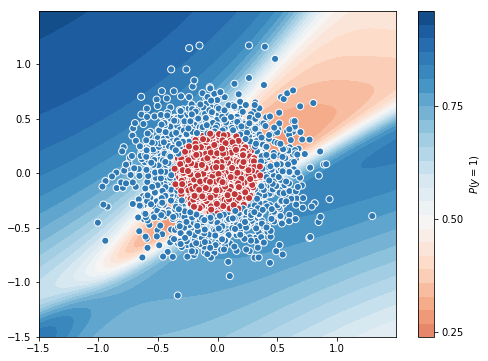
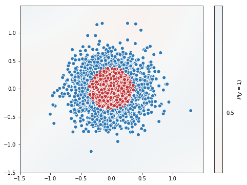

Deep Learning - Beginners Track
Instructor: Shangeth Rajaa
Batch Training
Batch Training is something very important but we didn’t use before as our dataset was smaller and we were just learning how to train models.
So far,
- we took each example $(X^i, y^i)$
- made prediction with $\hat{y}^i = g(X^i.W+b)$
- calculated the loss $\mathcal{L}(y^i , \hat{y}^i)$
- used back propagation to update $W$ and $b$ (all parameters in the model) with $w := w - \alpha \frac{\partial \mathcal{L}}{\partial w}$ and $b := b - \alpha \frac{\partial \mathcal{L}}{\partial b}$
- and repeated this process.
What is the problem here?
We used many toy datasets which were in 1000s, so it will take few seconds/milliseconds for training the model for several epoch. But real world datasets may have millions of data and updating model with one example at a time may take a lot of time.
This is for multi class classification
$z =\begin{bmatrix}z_1&z_2&z_3\ \end{bmatrix} = \begin{bmatrix}x_1&x_2 \ \end{bmatrix} . \begin{bmatrix}W_{11}&W_{12}&W_{13} \\ W_{21}&W_{22}&W_{23} \\ \end{bmatrix} + \begin{bmatrix}b_1&b_2&b_3\ \end{bmatrix}$
$\hat{y} = \sigma(z)$
This uses one example $X = [x_1, x_2]$ at a time, but it is also possible to use all the data together as a matrix(Advantage of matrix multiplication and linear algebra).
$z = \begin{bmatrix}z_1^1&z_2^1&z_3^1\\ z_1^2&z_2^2&z_3^2\\ \vdots&\vdots&\vdots \\ z_1^n&z_2^n&z_3^n \ \end{bmatrix} = \begin{bmatrix}x_1^1&x_2^1\\ x_1^2&x_2^2\\ \vdots&\vdots \\ x_1^n&x_2^n\\ \end{bmatrix} . \begin{bmatrix}W_{11}&W_{12}&W_{13}\\ W_{21}&W_{22}&W_{23}\\ \end{bmatrix} + \begin{bmatrix}b_1&b_2&b_3\\ \end{bmatrix}$
$ \hat{y} = \begin{bmatrix}\sigma(z_1^1)&\sigma(z_2^1)&\sigma(z_3^1)\\ \sigma(z_1^2)&\sigma(z_2^2)&\sigma(z_3^2)\\ \vdots&\vdots&\vdots \\ \sigma(z_1^n)&\sigma(z_2^n)&\sigma(z_3^n) \ \end{bmatrix} $
This is called batch gradient descent. There is a problem with this. When your data is in millions, holding all the millions of data into a matrix may cause memory issues. It’s not possible for the RAM to hold millions of data into the memory altogether.
So we do something called mini-batch gradient descent. We take few number of examples say m(batch size) which the memory can hold at a time and use that for training and during the next step we use the next m examples and continue till the complete dataset is used for training.
Example:
- no of examples (n) = 2300
- batch size (m) = 500
- then we use [500, 500, 500, 500, 300] batches for training at a time.
By this way we use the advantage of matrix multiplication and do not fill the RAM memory.
We can change the batch size with a parameter called batch_size in model.fit.
Lets try different batch size.
Batch Training in TensorFlow
from sklearn.datasets import make_gaussian_quantiles
from sklearn.model_selection import train_test_split
import matplotlib.pyplot as plt
X, y = make_gaussian_quantiles(n_samples=2000, n_features=2, n_classes=2, random_state=3, cov=0.1)
plt.figure(figsize=(10,10))
plt.scatter(X[:,0], X[:,1],c=y)
plt.grid(True)
plt.show()
X_train, X_test, y_train, y_test = train_test_split(X, y, test_size=0.3, shuffle=True)
X_train, X_val, y_train, y_val = train_test_split(X_train, y_train, test_size=0.2, shuffle=True)
print('Train = {}\nTest = {}\nVal = {}'.format(len(X_train), len(X_test), len(X_val)))

Train = 1120
Test = 600
Val = 280
Batch Size = 1
%%time
#magic function to measure time of the cell
import tensorflow as tf
from tensorflow import keras
import numpy as np
import matplotlib.pyplot as plt
tf.keras.backend.clear_session()
# random number initialized to same, for reproducing the same results.
np.random.seed(0)
tf.set_random_seed(0)
model = tf.keras.Sequential([
keras.layers.Dense(units=10, input_shape=[2]),
keras.layers.Activation('tanh'),
keras.layers.Dense(units=10),
keras.layers.Activation('tanh'),
keras.layers.Dense(units=1),
keras.layers.Activation('sigmoid')
])
model.compile(optimizer='adam', loss='binary_crossentropy', metrics=['accuracy'])
tf_history = model.fit(X_train, y_train, batch_size=1, epochs=10, verbose=True, validation_data=(X_val, y_val))
# contour plot
xx, yy = np.mgrid[-1.5:1.5:.01, -1.5:1.5:.01]
grid = np.c_[xx.ravel(), yy.ravel()]
probs = model.predict(grid)[:,0].reshape(xx.shape)
f, ax = plt.subplots(figsize=(8, 6))
contour = ax.contourf(xx, yy, probs, 25, cmap="RdBu",
vmin=0, vmax=1)
ax_c = f.colorbar(contour)
ax_c.set_label("$P(y = 1)$")
ax_c.set_ticks([0, .25, .5, .75, 1])
ax.scatter(X[:,0], X[:, 1], c=y, s=50,
cmap="RdBu", vmin=-.2, vmax=1.2,
edgecolor="white", linewidth=1)
plt.show()
# test accuracy
from sklearn.metrics import accuracy_score
y_test_pred = model.predict(X_test)
test_accuracy = accuracy_score((y_test_pred > 0.5), y_test)
print('\nTest Accuracy = ', test_accuracy)
WARNING: Logging before flag parsing goes to stderr.
W0902 14:17:32.553351 139709616596864 deprecation.py:506] From /usr/local/lib/python3.6/dist-packages/tensorflow/python/ops/init_ops.py:1251: calling VarianceScaling.__init__ (from tensorflow.python.ops.init_ops) with dtype is deprecated and will be removed in a future version.
Instructions for updating:
Call initializer instance with the dtype argument instead of passing it to the constructor
W0902 14:17:32.656815 139709616596864 deprecation.py:323] From /usr/local/lib/python3.6/dist-packages/tensorflow/python/ops/nn_impl.py:180: add_dispatch_support.<locals>.wrapper (from tensorflow.python.ops.array_ops) is deprecated and will be removed in a future version.
Instructions for updating:
Use tf.where in 2.0, which has the same broadcast rule as np.where
Train on 1120 samples, validate on 280 samples
Epoch 1/10
1120/1120 [==============================] - 2s 2ms/sample - loss: 0.6972 - acc: 0.4634 - val_loss: 0.6945 - val_acc: 0.5321
Epoch 2/10
1120/1120 [==============================] - 2s 1ms/sample - loss: 0.6942 - acc: 0.5312 - val_loss: 0.6923 - val_acc: 0.4250
Epoch 3/10
1120/1120 [==============================] - 2s 1ms/sample - loss: 0.6922 - acc: 0.4821 - val_loss: 0.6834 - val_acc: 0.6607
.
.
Epoch 8/10
1120/1120 [==============================] - 2s 1ms/sample - loss: 0.5767 - acc: 0.7554 - val_loss: 0.5457 - val_acc: 0.7964
Epoch 9/10
1120/1120 [==============================] - 2s 1ms/sample - loss: 0.5507 - acc: 0.7571 - val_loss: 0.5231 - val_acc: 0.7929
Epoch 10/10
1120/1120 [==============================] - 2s 1ms/sample - loss: 0.5296 - acc: 0.7607 - val_loss: 0.4991 - val_acc: 0.8071

Test Accuracy = 0.7583333333333333
CPU times: user 21.5 s, sys: 1.52 s, total: 23 s
Wall time: 19.5 s
Batch size of 1 for 10 epochs uses 23s. Let’s increase the batch size to 100 and check the time.
Batch Size = 100
%%time
#magic function to measure time of the cell
import tensorflow as tf
from tensorflow import keras
import numpy as np
import matplotlib.pyplot as plt
tf.keras.backend.clear_session()
# random number initialized to same, for reproducing the same results.
np.random.seed(0)
tf.set_random_seed(0)
model = tf.keras.Sequential([
keras.layers.Dense(units=10, input_shape=[2]),
keras.layers.Activation('tanh'),
keras.layers.Dense(units=10),
keras.layers.Activation('tanh'),
keras.layers.Dense(units=1),
keras.layers.Activation('sigmoid')
])
model.compile(optimizer='adam', loss='binary_crossentropy', metrics=['accuracy'])
tf_history = model.fit(X_train, y_train, batch_size=100, epochs=10, verbose=True, validation_data=(X_val, y_val))
# contour plot
xx, yy = np.mgrid[-1.5:1.5:.01, -1.5:1.5:.01]
grid = np.c_[xx.ravel(), yy.ravel()]
probs = model.predict(grid)[:,0].reshape(xx.shape)
f, ax = plt.subplots(figsize=(8, 6))
contour = ax.contourf(xx, yy, probs, 25, cmap="RdBu",
vmin=0, vmax=1)
ax_c = f.colorbar(contour)
ax_c.set_label("$P(y = 1)$")
ax_c.set_ticks([0, .25, .5, .75, 1])
ax.scatter(X[:,0], X[:, 1], c=y, s=50,
cmap="RdBu", vmin=-.2, vmax=1.2,
edgecolor="white", linewidth=1)
plt.show()
# test accuracy
from sklearn.metrics import accuracy_score
y_test_pred = model.predict(X_test)
test_accuracy = accuracy_score((y_test_pred > 0.5), y_test)
print('\nTest Accuracy = ', test_accuracy)
Train on 1120 samples, validate on 280 samples
Epoch 1/10
1120/1120 [==============================] - 0s 104us/sample - loss: 0.6993 - acc: 0.5116 - val_loss: 0.7020 - val_acc: 0.5107
Epoch 2/10
1120/1120 [==============================] - 0s 21us/sample - loss: 0.6960 - acc: 0.5134 - val_loss: 0.6988 - val_acc: 0.5179
Epoch 3/10
1120/1120 [==============================] - 0s 20us/sample - loss: 0.6946 - acc: 0.5223 - val_loss: 0.6963 - val_acc: 0.5143
.
.
Epoch 8/10
1120/1120 [==============================] - 0s 22us/sample - loss: 0.6921 - acc: 0.4384 - val_loss: 0.6926 - val_acc: 0.4214
Epoch 9/10
1120/1120 [==============================] - 0s 22us/sample - loss: 0.6921 - acc: 0.4848 - val_loss: 0.6920 - val_acc: 0.5071
Epoch 10/10
1120/1120 [==============================] - 0s 19us/sample - loss: 0.6920 - acc: 0.4902 - val_loss: 0.6924 - val_acc: 0.4821

Test Accuracy = 0.47333333333333333
CPU times: user 2.56 s, sys: 387 ms, total: 2.94 s
Wall time: 2.34 s
Batch size of 100 took just 2.94s. Hope now you understood the advantage of Batch training.
Gradient Descent in Batch Training
In batch training, we calculate the loss as average of loss of the batch, $\mathcal{L}(y , \hat{y}) = \dfrac{1}{n} \sum_{i=1}^{n}\mathcal{L}(y^i , \hat{y}^i)$
$\therefore \dfrac{\partial \mathcal{L}}{\partial W} = \dfrac{1}{n} \sum_{i=1}^{n}\dfrac{\partial \mathcal{L}(y^i , \hat{y}^i)}{\partial W}$
and $\dfrac{\partial \mathcal{L}}{\partial b} = \dfrac{1}{n} \sum_{i=1}^{n}\dfrac{\partial \mathcal{L}(y^i , \hat{y}^i)}{\partial b}$
Which means the gradients are average of gradients over the batch of data.
Then update the parameters normally with $w := w - \alpha \frac{\partial \mathcal{L}}{\partial w}$ and $b := b - \alpha \frac{\partial \mathcal{L}}{\partial b}$.